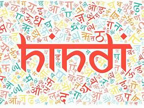
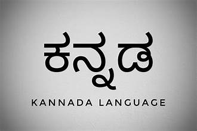
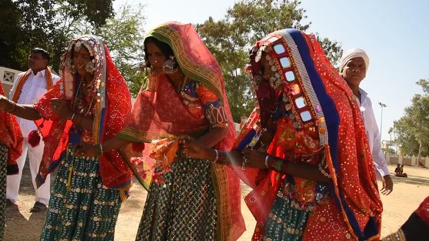
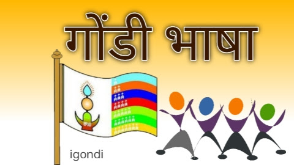
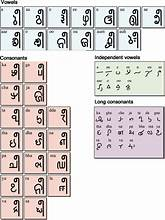
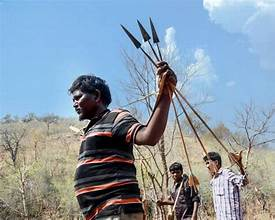

🗣️✨ Languages of Andhra Pradesh – A Melodious Blend of Tradition and Diversity 📝🌾
📚 1. Telugu 🌟

Official Language: Spoken by over 88% of the population, Telugu is the primary and official language of Andhra Pradesh.
Script: Telugu script, derived from the ancient Brahmi script.
Significance: Known for its lyrical beauty and rich literary heritage, Telugu is often called the Italian of the East.
Literary Legacy: Eminent poets like Nannayya, Tikkana, and Yerrapragada enriched Telugu literature with epics and poetry.
🕉️ 2. Urdu 🌙
Widely Spoken: Especially in Hyderabad, Kurnool, Anantapur, and Guntur regions, with around 5% of the population using it as their primary language.
Script: Persian-Arabic script.
Cultural Impact: Urdu has a significant influence on literature, art, and the Deccan culture.

✝️ 3. English 📚
Administrative Language: Used for official purposes, higher education, and legal documentation.
Widely Understood: English is widely spoken in urban areas, business circles, and educational institutions.
🕌 4. Hindi 🇮🇳
Growing Influence: Spoken and understood by a section of the population, especially in urban areas and among migrant communities.
Significance: Hindi serves as a link language for communication between non-Telugu-speaking communities.

🕉️ 5. Tamil 🧘

Regional Presence: Spoken primarily in Chittoor and Nellore districts, close to the Tamil Nadu border.
Cultural Influence: Tamil-speaking communities maintain their distinct cultural identity while integrating with Telugu traditions.
🕉️ 6. Kannada 🌼
Border Influence: Predominantly spoken in regions near the Karnataka border, particularly in Anantapur and Rayalaseema.
Linguistic Legacy: Kannada speakers have contributed significantly to the literary and cultural tapestry of Andhra Pradesh.

🕉️ 7. Marathi 🏵️

Minority Language: Spoken by small communities near the Maharashtra border, particularly in Telangana and Rayalaseema regions.
🏹 8. Lambadi (Banjara Language) 🌾
Tribal Language: Spoken by the Lambadi (Banjara) tribal community, known for their vibrant culture and folk traditions.
Dialects: A mix of Rajasthani, Gujarati, and Marathi influences.

🪘 9. Gondi 🐾

Tribal Language: Spoken by Gond tribal communities in the hilly regions of Eastern Andhra Pradesh.
Cultural Significance: Gondi preserves the ancient oral traditions, folklore, and rituals of the Gond people.
🎨 10. Savara (Sora) 🏞️
Tribal Language: Spoken by the Savara tribal communities residing in the Srikakulam and Vizianagaram districts.
Unique Script: Savara has its own script known as Sorang Sompeng.

🪔 11. Koya 🌲

Tribal Dialect: Spoken by the Koya tribal population living along the Godavari river belt.
Cultural Heritage: Koya language preserves the oral traditions and folklore of the indigenous communities.
🕊️ 12. Odia 🕉️
Coastal Presence: Spoken by Odisha migrant communities in northern Andhra Pradesh, especially in Srikakulam and Vizianagaram districts.
Cultural Exchange: Odia culture blends seamlessly with the local Telugu traditions.

🌾 13. Yerukula (Yerukula Dialect) 🧺

Tribal Language: Spoken by the Yerukula community, known for their traditional basket weaving and nomadic lifestyle.
🕉️ 14. Chenchu 🌿
Hunter-Gatherer Tribe: Chenchu tribes residing in the Nallamala forests communicate in their distinct dialect, reflecting their ancient lifestyle.
